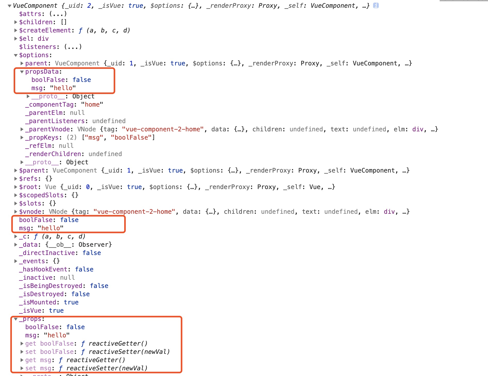
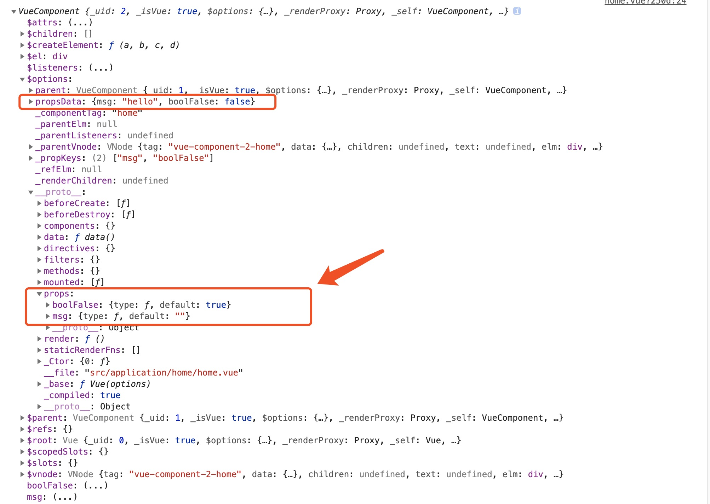

initProps
分析：
- 获取父组件传递过来的
propsData：vm.$options.propsData - 遍历自定义属性
propsOptions- 校验
vm.$options.propsData中是否存在自定义的props - 非生产环境下，校验自定义的
props是否为保留属性(key,ref,slot,slot-scope,is) - 定义响应式数据
defineReactive()（暂不分析） - 通过 proxy 方法，将
props代理到vm上
- 校验
/**
* 定义初始化props的方法，
* @param {*} vm : 当前vm实例
* @param {*} propsOptions : 自定义的props对象
* 作用：
* 1、遍历定义的props，调用defineReactive方法，把props对应的值变成响应式，通过 vm._props.xxx 访问到定义 props 中对应的属性
* 2、把vm._props.xxx 的访问代理到 vm.xxx 上
*/
function initProps (vm: Component, propsOptions: Object) {
// 定义propsData： 存放 vm.$options.propsData，如果不存在，默认值{}
const propsData = vm.$options.propsData || {}
// 初始化 props，vm._props为空对象
const props = vm._props = {}
// cache prop keys so that future props updates can iterate using Array
// instead of dynamic object key enumeration.
// 初始化 keys，vm.$options._propKeys为空数组
const keys = vm.$options._propKeys = []
const isRoot = !vm.$parent
// root instance props should be converted
if (!isRoot) {
toggleObserving(false)
}
// 遍历自定义的props对象
for (const key in propsOptions) {
// 将key存储到keys中
keys.push(key)
// 参数：自定义props对象的每个key，自定义props对象，传入的props，当前实例
// 返回 propsData中的props对应key的value
const value = validateProp(key, propsOptions, propsData, vm)
/* istanbul ignore else */
if (process.env.NODE_ENV !== 'production') {
// 非生产环境
// key（驼峰）变成为连接符（因为保留属性中存在'slot-scope'）
const hyphenatedKey = hyphenate(key)
// 判断自定义属性是否在保留属性中存在，如果存在则抛出异常提示
if (isReservedAttribute(hyphenatedKey) ||
config.isReservedAttr(hyphenatedKey)) {
warn(
`"${hyphenatedKey}" is a reserved attribute and cannot be used as component prop.`,
vm
)
}
// 定义响应式数据，传入vm._props,vm.$options.props.key,validateProp(key, propsOptions, propsData, vm)
defineReactive(props, key, value, () => {
if (!isRoot && !isUpdatingChildComponent) {
warn(
`Avoid mutating a prop directly since the value will be ` +
`overwritten whenever the parent component re-renders. ` +
`Instead, use a data or computed property based on the prop's ` +
`value. Prop being mutated: "${key}"`,
vm
)
}
})
} else {
// 生产环境定义响应式数据
defineReactive(props, key, value)
}
// static props are already proxied on the component's prototype
// during Vue.extend(). We only need to proxy props defined at
// instantiation here.
// 如果遍历自定义的props不在vm实例上，则把key代理到vm上
if (!(key in vm)) {
proxy(vm, `_props`, key)
}
}
toggleObserving(true)
}
example:
App.vue
<template>
<div id="app">
<div>{{msg}}</div>
<home :msg="msg" :bool-false="bool"></home>
</div>
</template>
<script>
import Home from './application/home/home.vue'
export default {
name: 'App',
components: {Home},
data() {
return {
msg: 'hello',
bool: false
};
},
mounted() {
// console.log(this)
}
};
</script>
home.vue
<template>
<div>
home
</div>
</template>
<script>
// import Vue2 from './c'
export default {
props: {
msg: {
type: String,
default: ''
},
boolFalse: {
type: Boolean,
default: true
}
},
data() {
return {}
},
mounted() {
console.log(this)
},
methods: {}
}
</script>

